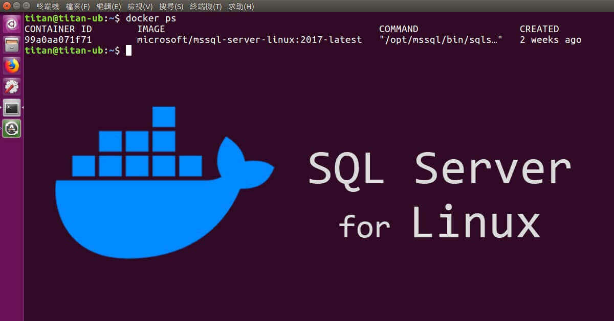
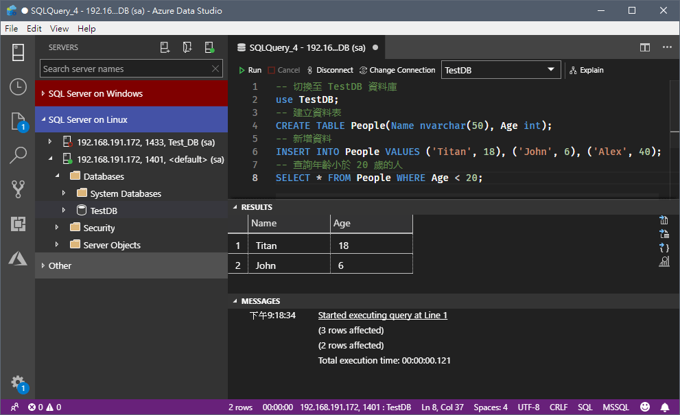
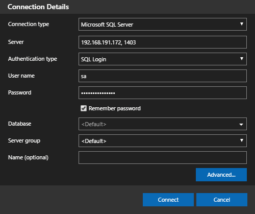
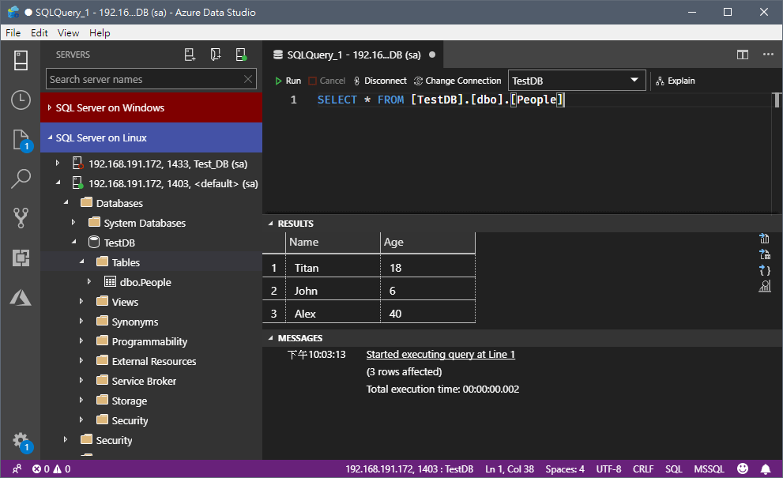

<!DOCTYPE html><html><head><meta charset="utf-8"><title>在 Docker 下建立並使用 MSSQL Server for Linux | Titangene Blog</title><meta http-equiv="X-UA-Compatible" content="IE=edge"><meta name="viewport" content="width=device-width,initial-scale=1,maximum-scale=1"><meta name="HandheldFriendly" content="True"><meta name="apple-mobile-web-app-capable" content="yes"><meta name="author" content="Titangene"><link rel="shortcut icon" href="/favicon.ico"><link rel="alternate" href="/atom.xml" title="Titangene Blog"><meta name="description" content="在 SQL Server 2017 時，微軟推出了 Linux 版，同時也在 Docker Hub 上提供了 microsoft&#x2F;mssql-server-linux 的 Docker image。本篇會介紹如何在 Docker 下，透過此 image 來建立並使用 MSSQL Server for Linux。"><meta property="og:type" content="article"><meta property="og:title" content="在 Docker 下建立並使用 MSSQL Server for Linux"><meta property="og:url" content="https://titangene.github.io/article/docker-mssql-server-for-linux.html"><meta property="og:site_name" content="Titangene Blog"><meta property="og:description" content="在 SQL Server 2017 時，微軟推出了 Linux 版，同時也在 Docker Hub 上提供了 microsoft&#x2F;mssql-server-linux 的 Docker image。本篇會介紹如何在 Docker 下，透過此 image 來建立並使用 MSSQL Server for Linux。"><meta property="og:locale" content="zh_TW"><meta property="og:image" content="https://titangene.github.io/images/cover/docker-mssql-server-for-linux.jpg"><meta property="article:published_time" content="2019-01-30T15:30:00.000Z"><meta property="article:modified_time" content="2019-04-30T15:57:59.000Z"><meta property="article:author" content="Titangene"><meta property="article:tag" content="Docker"><meta property="article:tag" content="Container"><meta name="twitter:card" content="summary_large_image"><meta name="twitter:image" content="https://titangene.github.io/images/cover/docker-mssql-server-for-linux.jpg"><meta name="twitter:creator" content="@titangeneTW"><meta name="twitter:site" content="@titangene_blog"><meta property="fb:admins" content="100001106016019"><meta property="fb:app_id" content="2470546159839111"><meta property="og:image:width" content="1200"><meta property="og:image:height" content="630"><meta name="google-site-verification" content="AaJ39L7h-nWwJjXJMhAMtXSF6H6BUgGWXC80kYvLic8"><link href="https://fonts.googleapis.com/css2?family=Roboto&display=swap" rel="stylesheet"><link href="https://fonts.googleapis.com/css?family=Source+Code+Pro&display=swap" rel="stylesheet"><link rel="stylesheet" href="https://cdnjs.cloudflare.com/ajax/libs/font-awesome/5.13.0/css/all.min.css"><link rel="stylesheet" href="https://unpkg.com/gitalk/dist/gitalk.css"><link rel="stylesheet" href="/style.css"><script async src="https://www.googletagmanager.com/gtag/js?id=UA-129758206-1"></script><script>!function(a){function n(){dataLayer.push(arguments)}a.dataLayer=a.dataLayer||[],n("js",new Date),n("config","UA-129758206-1")}(window)</script><script>function setLoadingBarProgress(e){document.getElementById("loading-bar").style.width=e+"%"}</script><meta name="generator" content="Hexo 4.2.0"><link rel="alternate" href="/atom.xml" title="Titangene Blog" type="application/atom+xml"></head></html><body><div id="loading-bar-wrapper"><div id="loading-bar"></div></div><script>setLoadingBarProgress(20)</script><header class="l_header"><div class="wrapper"><div class="nav-main container container--flex"><a class="logo flat-box" href="/">Titangene Blog</a><div class="menu"><ul class="h-list"><li><a class="flat-box nav-home" href="/">Home</a></li><li><a class="flat-box nav-archives" href="/archives">Archives</a></li></ul><div class="underline"></div></div><div class="m_search"><form name="searchform" class="form u-search-form"><input type="text" class="input u-search-input" placeholder="Search"> <i class="fas fa-search"></i></form></div><ul class="switcher h-list"><li class="s-search"><a class="fas fa-search" href="javascript:void(0)"></a></li><li class="s-menu"><a class="fas fa-bars" href="javascript:void(0)"></a></li></ul></div><div class="nav-sub container container--flex"><a class="logo flat-box" href="/">Titangene Blog</a><ul class="switcher h-list"><li class="s-comment"><a class="far fa-comment-alt" href="javascript:void(0)"></a></li><li class="s-top"><a class="fas fa-arrow-up" href="javascript:void(0)"></a></li><li class="s-toc"><a class="fas fa-list-ol" href="javascript:void(0)"></a></li></ul></div></div></header><aside class="menu-phone"><nav><a href="/" class="nav-home nav">Home </a><a href="/archives" class="nav-archives nav">Archives</a></nav></aside><script>setLoadingBarProgress(40)</script><div class="l_body"><div class="container clearfix"><div class="l_main"><article id="post-docker-mssql-server-for-linux" class="post white-box article-type-post" itemscope itemprop="blogPost"><section class="meta"><h2 class="title"><a href="/article/docker-mssql-server-for-linux.html">在 Docker 下建立並使用 MSSQL Server for Linux</a></h2><span class="post-time"><span class="post-meta-item-icon"><i class="fa fa-calendar"></i> </span><span class="post-meta-item-text">發表於</span> <time title="建立時間：2019-01-30 23:30:00" itemprop="dateCreated datePublished" datetime="2019-01-30T23:30:00+08:00">2019-01-30 </time><span class="post-meta-divider">|</span> <span class="post-meta-item-icon"><i class="fa fa-calendar-check"></i> </span><span class="post-meta-item-text">更新於</span> <time title="修改時間：2019-04-30 23:57:59" itemprop="dateModified" datetime="2019-04-30T23:57:59+08:00">2019-04-30</time></span> <span class="comments-count"><span class="post-meta-divider">|</span> <span class="post-meta-item-icon"><i class="fas fa-comment"></i> </span><a href="https://titangene.github.io/article/docker-mssql-server-for-linux.html#comments" class="article-comment-count">留言</a></span><div class="post-category"><span class="post-meta-item-icon"><i class="fa fa-folder"></i> </span><span class="post-meta-item-text">分類於</span> <span itemprop="about" itemscope itemtype="http://schema.org/Thing"><a href="/categories/sql-server/" itemprop="url" rel="index"><span itemprop="name">SQL Server</span></a>, <a href="/categories/sql-server/linux/" itemprop="url" rel="index"><span itemprop="name">Linux</span></a>, <a href="/categories/sql-server/linux/database/" itemprop="url" rel="index"><span itemprop="name">Database</span></a>, <a href="/categories/sql-server/linux/database/devops/" itemprop="url" rel="index"><span itemprop="name">DevOps</span></a></span></div></section><section class="toc-wrapper"><h3>目錄</h3><ol class="toc"><li class="toc-item toc-level-2"><a class="toc-link" href="#MSSQL-Server-for-Linux-要求"><span class="toc-text">MSSQL Server for Linux 要求</span></a></li><li class="toc-item toc-level-2"><a class="toc-link" href="#建立-Container"><span class="toc-text">建立 Container</span></a></li><li class="toc-item toc-level-2"><a class="toc-link" href="#連接至-SQL-Server"><span class="toc-text">連接至 SQL Server</span></a></li><li class="toc-item toc-level-2"><a class="toc-link" href="#變更-SA-的密碼"><span class="toc-text">變更 SA 的密碼</span></a></li><li class="toc-item toc-level-2"><a class="toc-link" href="#建立資料庫及查詢資料"><span class="toc-text">建立資料庫及查詢資料</span></a></li><li class="toc-item toc-level-2"><a class="toc-link" href="#使用-Azure-Data-Studio-連接-SQL-Server"><span class="toc-text">使用 Azure Data Studio 連接 SQL Server</span></a><ol class="toc-child"><li class="toc-item toc-level-3"><a class="toc-link" href="#安裝-Azure-Data-Studio"><span class="toc-text">安裝 Azure Data Studio</span></a><ol class="toc-child"><li class="toc-item toc-level-4"><a class="toc-link" href="#for-Windows"><span class="toc-text">for Windows</span></a></li><li class="toc-item toc-level-4"><a class="toc-link" href="#for-Linux"><span class="toc-text">for Linux</span></a></li><li class="toc-item toc-level-4"><a class="toc-link" href="#for-macOS"><span class="toc-text">for macOS</span></a></li></ol></li><li class="toc-item toc-level-3"><a class="toc-link" href="#登入-SQL-Server"><span class="toc-text">登入 SQL Server</span></a></li></ol></li><li class="toc-item toc-level-2"><a class="toc-link" href="#建立資料表和資料，並查詢資料"><span class="toc-text">建立資料表和資料，並查詢資料</span></a></li><li class="toc-item toc-level-2"><a class="toc-link" href="#刪除-Container"><span class="toc-text">刪除 Container</span></a></li><li class="toc-item toc-level-2"><a class="toc-link" href="#透過-Volume-將資料庫的資料儲存至主機"><span class="toc-text">透過 Volume 將資料庫的資料儲存至主機</span></a></li><li class="toc-item toc-level-2"><a class="toc-link" href="#備份與還原資料庫"><span class="toc-text">備份與還原資料庫</span></a><ol class="toc-child"><li class="toc-item toc-level-3"><a class="toc-link" href="#範例前置準備：建立資料庫、資料表和資料"><span class="toc-text">範例前置準備：建立資料庫、資料表和資料</span></a></li><li class="toc-item toc-level-3"><a class="toc-link" href="#備份資料庫"><span class="toc-text">備份資料庫</span></a></li><li class="toc-item toc-level-3"><a class="toc-link" href="#範例前置處理：刪除-container-和資料庫資料"><span class="toc-text">範例前置處理：刪除 container 和資料庫資料</span></a></li><li class="toc-item toc-level-3"><a class="toc-link" href="#還原資料庫"><span class="toc-text">還原資料庫</span></a></li></ol></li><li class="toc-item toc-level-2"><a class="toc-link" href="#使用-Azure-Data-Studio-備份或還原資料庫"><span class="toc-text">使用 Azure Data Studio 備份或還原資料庫</span></a></li><li class="toc-item toc-level-2"><a class="toc-link" href="#參考連結"><span class="toc-text">參考連結</span></a></li></ol></section><section class="article typo"><div class="article-entry" itemprop="articleBody"><p></p><p>在 SQL Server 2017 時，微軟推出了 Linux 版，同時也在 Docker Hub 上提供了 <a href="https://hub.docker.com/r/microsoft/mssql-server-linux/" target="_blank" rel="noopener">microsoft/mssql-server-linux</a> 的 Docker image。本篇會介紹如何在 Docker 下，透過此 image 來建立並使用 MSSQL Server for Linux。</p><a id="more"></a><h2 id="MSSQL-Server-for-Linux-要求"><a class="header-anchor" href="#MSSQL-Server-for-Linux-要求"></a>MSSQL Server for Linux 要求</h2><ul><li>必須 Docker Engine 1.8+，支援任何平台 (Windows/Mac/Linux)</li><li>硬碟空間至少 2 GB</li><li>RAM 至少 2 GB</li><li>image 必要的環境變數：<ul><li><code>ACCEPT_EULA=Y</code>：確認同意授權合約</li><li><code>MSSQL_SA_PASSWORD=&lt;YourStrong!Passw0rd&gt;</code>：設定 SA 密碼</li></ul></li><li>A strong system administrator (SA) 密碼必須符合以下規則：<ul><li>至少 8 個字元</li><li>必需包含英文大寫、英文小寫、數字、非字母數字符號四者中的其中三種即可</li></ul></li></ul><blockquote><p>詳情可參考官方的 <a href="https://docs.microsoft.com/zh-tw/sql/linux/sql-server-linux-setup?view=sql-server-2017#system" target="_blank" rel="noopener">SQL Server on Liunx 的系統需求</a> 文件。</p></blockquote><h2 id="建立-Container"><a class="header-anchor" href="#建立-Container"></a>建立 Container</h2><p>Docker Hub：<a href="https://hub.docker.com/r/microsoft/mssql-server-linux/" target="_blank" rel="noopener">microsoft/mssql-server-linux</a></p><figure class="highlight shell"><table><tr><td class="gutter"><pre><span class="line">1</span><br><span class="line">2</span><br><span class="line">3</span><br><span class="line">4</span><br><span class="line">5</span><br><span class="line">6</span><br><span class="line">7</span><br></pre></td><td class="code"><pre><code class="hljs shell"><span class="hljs-meta">#</span><span class="bash"> 從 Docker Hub 提取 SQL Server 2017 Linux container image</span><br><span class="hljs-meta">$</span><span class="bash"> docker pull microsoft/mssql-server-linux:2017-latest</span><br><br><span class="hljs-meta">#</span><span class="bash"> 建立並執行 Docker container</span><br><span class="hljs-meta">$</span><span class="bash"> docker run -e <span class="hljs-string">'ACCEPT_EULA=Y'</span> -e <span class="hljs-string">'MSSQL_SA_PASSWORD=&lt;YourStrong!Passw0rd&gt;'</span> \</span><br>  -p 1401:1433 --name sql1 \<br>  -d microsoft/mssql-server-linux:2017-latest<br></code></pre></td></tr></table></figure><ul><li><code>-e 'ACCEPT_EULA=Y'</code>：確認同意授權合約</li><li><code>-e 'MSSQL_SA_PASSWORD=&lt;YourStrong!Passw0rd&gt;'</code>：必需是強密碼並至少 8 個字元。強密碼英文大寫、英文小寫、數字、非字母數字符號四者中的其中三種即可。</li><li><code>-p hostPort:containerPort</code>：host 對外開 1401 port，container 內開 1433 port</li><li><code>--name</code>：指定 container 名稱</li><li><code>-d</code>：背景執行</li><li><code>microsoft/mssql-server-linux:2017-latest</code>：使用 SQL Server 2017 Linux image 建立 container</li></ul><p>如果列表 <code>NAMES</code> 顯示 sql1 並且 <code>STATUS</code> 顯示 UP 就代表 SQL Server 已在背景執行：</p><figure class="highlight shell"><table><tr><td class="gutter"><pre><span class="line">1</span><br><span class="line">2</span><br><span class="line">3</span><br><span class="line">4</span><br></pre></td><td class="code"><pre><code class="hljs shell"><span class="hljs-meta">#</span><span class="bash"> 查看 container 的狀態</span><br><span class="hljs-meta">$</span><span class="bash"> docker ps</span><br>CONTAINER ID   IMAGE                                      COMMAND                  CREATED          STATUS          PORTS                    NAMES<br>08e2f151d579   microsoft/mssql-server-linux:2017-latest   "/bin/sh -c /opt/mss…"   31 minutes ago   Up 31 minutes   0.0.0.0:1401-&gt;1433/tcp   sql1<br></code></pre></td></tr></table></figure><h2 id="連接至-SQL-Server"><a class="header-anchor" href="#連接至-SQL-Server"></a>連接至 SQL Server</h2><p>使用 SQL Server 命令列工具 <code>sqlcmd</code>，連接到 SQL Server container：</p><figure class="highlight shell"><table><tr><td class="gutter"><pre><span class="line">1</span><br><span class="line">2</span><br><span class="line">3</span><br><span class="line">4</span><br><span class="line">5</span><br><span class="line">6</span><br><span class="line">7</span><br><span class="line">8</span><br><span class="line">9</span><br></pre></td><td class="code"><pre><code class="hljs shell"><span class="hljs-meta">#</span><span class="bash"> 在外部向執行中的 container 內部下指令，啟動 Container 內部的互動式 bash shell，來執行你下的指令</span><br><span class="hljs-meta">$</span><span class="bash"> docker <span class="hljs-built_in">exec</span> -it sql1 bash</span><br><br><span class="hljs-meta">#</span><span class="bash"> 使用 SQL Server 命令列工具 `sqlcmd`，並登入帳號密碼連接到 SQL Server</span><br><span class="hljs-meta">$</span><span class="bash"> /opt/mssql-tools/bin/sqlcmd -S localhost -U SA</span><br>Password:<br><br><span class="hljs-meta">#</span><span class="bash"> 出現 <span class="hljs-string">"1&gt;"</span> 就代表已成功登入並已進入 sqlcmd</span><br><span class="hljs-meta">1&gt;</span><br></code></pre></td></tr></table></figure><h2 id="變更-SA-的密碼"><a class="header-anchor" href="#變更-SA-的密碼"></a>變更 SA 的密碼</h2><p>SA 帳號是在安裝期間建立的 SQL Server 實例上的系統管理員。建立 SQL Server container 之後，在 container 中執行 <code>echo $MSSQL_SA_PASSWORD</code>，即可查看 SA 的密碼：</p><figure class="highlight shell"><table><tr><td class="gutter"><pre><span class="line">1</span><br><span class="line">2</span><br><span class="line">3</span><br></pre></td><td class="code"><pre><code class="hljs shell"><span class="hljs-meta">$</span><span class="bash"> docker <span class="hljs-built_in">exec</span> -it sql1 bash</span><br>root@xxx:/# echo $MSSQL_SA_PASSWORD<br>YourStrong!Passw0rd<br></code></pre></td></tr></table></figure><p>執行下面指令可以變更 SA 的密碼，而 <code>opt/mssql-tools/bin/sqlcmd</code> 是 <code>sqlcmd</code> 所在的路徑：</p><figure class="highlight shell"><table><tr><td class="gutter"><pre><span class="line">1</span><br><span class="line">2</span><br><span class="line">3</span><br></pre></td><td class="code"><pre><code class="hljs shell"><span class="hljs-meta">$</span><span class="bash"> docker <span class="hljs-built_in">exec</span> -it sql1 /opt/mssql-tools/bin/sqlcmd \</span><br>  -S localhost -U SA -P '&lt;YourStrong!Passw0rd&gt;' \<br>  -Q 'ALTER LOGIN SA WITH PASSWORD="&lt;YourNewStrong!Passw0rd&gt;"'<br></code></pre></td></tr></table></figure><p>參數說明：</p><ul><li><code>-S</code>：server</li><li><code>-U</code>：user name</li><li><code>-P</code>：password</li><li><code>-Q</code>：query，執行 SQL 指令後結束 <code>sqlcmd</code></li></ul><h2 id="建立資料庫及查詢資料"><a class="header-anchor" href="#建立資料庫及查詢資料"></a>建立資料庫及查詢資料</h2><figure class="highlight shell"><table><tr><td class="gutter"><pre><span class="line">1</span><br><span class="line">2</span><br><span class="line">3</span><br><span class="line">4</span><br><span class="line">5</span><br><span class="line">6</span><br><span class="line">7</span><br><span class="line">8</span><br><span class="line">9</span><br><span class="line">10</span><br><span class="line">11</span><br><span class="line">12</span><br><span class="line">13</span><br><span class="line">14</span><br><span class="line">15</span><br><span class="line">16</span><br><span class="line">17</span><br><span class="line">18</span><br><span class="line">19</span><br><span class="line">20</span><br><span class="line">21</span><br></pre></td><td class="code"><pre><code class="hljs shell"><span class="hljs-meta">#</span><span class="bash"> 查詢 server 上所有 DB 名稱</span><br><span class="hljs-meta">1&gt;</span><span class="bash"> SELECT Name from sys.Databases</span><br><span class="hljs-meta">#</span><span class="bash"> 在 sqlcmd 指令模式下，要輸入 GO 指令才會執行</span><br><span class="hljs-meta">2&gt;</span><span class="bash"> GO</span><br>Name<br>------------<br>master<br>tempdb<br>model<br>msdb<br><br>(4 rows affected)<br><br><span class="hljs-meta">#</span><span class="bash"> 建立資料庫</span><br><span class="hljs-meta">1&gt;</span><span class="bash"> CREATE DATABASE TestDB</span><br><span class="hljs-meta">2&gt;</span><span class="bash"> GO</span><br><span class="hljs-meta">#</span><span class="bash"> 出現下面畫面 <span class="hljs-string">"1&gt;"</span> 就代表已成功建立資料庫</span><br><span class="hljs-meta">1&gt;</span><br><br><span class="hljs-meta">#</span><span class="bash"> 離開 sqlcmd</span><br><span class="hljs-meta">1&gt;</span><span class="bash"> quit</span><br></code></pre></td></tr></table></figure><h2 id="使用-Azure-Data-Studio-連接-SQL-Server"><a class="header-anchor" href="#使用-Azure-Data-Studio-連接-SQL-Server"></a>使用 Azure Data Studio 連接 SQL Server</h2><p><a href="https://github.com/Microsoft/azuredatastudio" target="_blank" rel="noopener">Azure Data Studio</a> (以前稱為 SQL Operations Studio) 是一個輕量且免費的跨平台 SQL Server 開源管理工具，支援 Windows、macOS、Linux。</p><p></p><h3 id="安裝-Azure-Data-Studio"><a class="header-anchor" href="#安裝-Azure-Data-Studio"></a>安裝 Azure Data Studio</h3><h4 id="for-Windows"><a class="header-anchor" href="#for-Windows"></a>for Windows</h4><p>下載並解壓縮，接著執行 <code>\azuredatastudio-windows\sqlops.exe</code> 即可開始使用。</p><h4 id="for-Linux"><a class="header-anchor" href="#for-Linux"></a>for Linux</h4><p>下載並解壓縮，接著將 Azure Data Studio 執行檔加入 <code>PATH</code> 環境變數，以後即可在終端機輸入 <code>azuredatastudio</code> 開啟 Azure Data Studio：</p><figure class="highlight shell"><table><tr><td class="gutter"><pre><span class="line">1</span><br><span class="line">2</span><br><span class="line">3</span><br><span class="line">4</span><br><span class="line">5</span><br><span class="line">6</span><br></pre></td><td class="code"><pre><code class="hljs shell"><span class="hljs-meta">$</span><span class="bash"> <span class="hljs-built_in">cd</span> ~</span><br><span class="hljs-meta">$</span><span class="bash"> cp ~/Downloads/azuredatastudio-linux-&lt;version string&gt;.tar.gz ~</span><br><span class="hljs-meta">$</span><span class="bash"> tar -xvf ~/azuredatastudio-linux-&lt;version string&gt;.tar.gz</span><br><span class="hljs-meta">$</span><span class="bash"> <span class="hljs-built_in">echo</span> <span class="hljs-string">'export PATH="$PATH:~/azuredatastudio-linux-x64"'</span> &gt;&gt; ~/.bashrc</span><br><span class="hljs-meta">$</span><span class="bash"> <span class="hljs-built_in">source</span> ~/.bashrc</span><br><span class="hljs-meta">$</span><span class="bash"> azuredatastudio</span><br></code></pre></td></tr></table></figure><h4 id="for-macOS"><a class="header-anchor" href="#for-macOS"></a>for macOS</h4><p>下載並解壓縮，然後將 Azure Data Studio 加入 Launchpad，將 <code>Studio.app</code> 拖曳到應用程式目錄 (Applications folder) 即可。</p><blockquote><p>安裝詳情可參考官方的 <a href="https://docs.microsoft.com/zh-tw/sql/azure-data-studio/download?view=sql-server-2017" target="_blank" rel="noopener">下載並安裝 - Azure Data Studio | Microsoft Docs</a> 文件。</p></blockquote><h3 id="登入-SQL-Server"><a class="header-anchor" href="#登入-SQL-Server"></a>登入 SQL Server</h3><p>Server name 的格式： <code>IP, Port</code></p><ul><li>IP：<ul><li>Linux：使用 <code>ifconfig</code> 指令查詢 IP</li><li>Windows：使用 <code>ipconfig</code> 指令查詢 IP</li></ul></li><li>Port：要看前面建立的 container 是設定多少 Port</li></ul><p>此範例 (也就是下面的指令) 是設定使用 1401 port，所以只要輸入 <code>YourIP, 1401</code> 就能與 SQL Server 連接。</p><figure class="highlight shell"><table><tr><td class="gutter"><pre><span class="line">1</span><br><span class="line">2</span><br><span class="line">3</span><br></pre></td><td class="code"><pre><code class="hljs shell"><span class="hljs-meta">$</span><span class="bash"> docker run -e <span class="hljs-string">'ACCEPT_EULA=Y'</span> -e <span class="hljs-string">'MSSQL_SA_PASSWORD=&lt;YourStrong!Passw0rd&gt;'</span> \</span><br>  -p 1401:1433 --name sql1 \<br>  -d microsoft/mssql-server-linux:2017-latest<br></code></pre></td></tr></table></figure><p></p><h2 id="建立資料表和資料，並查詢資料"><a class="header-anchor" href="#建立資料表和資料，並查詢資料"></a>建立資料表和資料，並查詢資料</h2><p>執行下面指令，建立資料表和資料，並查詢資料：</p><figure class="highlight sql"><table><tr><td class="gutter"><pre><span class="line">1</span><br><span class="line">2</span><br><span class="line">3</span><br><span class="line">4</span><br><span class="line">5</span><br><span class="line">6</span><br><span class="line">7</span><br><span class="line">8</span><br></pre></td><td class="code"><pre><code class="hljs sql"><span class="hljs-comment">-- 切換至 TestDB 資料庫</span><br><span class="hljs-keyword">use</span> TestDB;<br><span class="hljs-comment">-- 建立資料表</span><br><span class="hljs-keyword">CREATE</span> <span class="hljs-keyword">TABLE</span> People(<span class="hljs-keyword">Name</span> <span class="hljs-keyword">nvarchar</span>(<span class="hljs-number">50</span>), Age <span class="hljs-built_in">int</span>);<br><span class="hljs-comment">-- 新增資料</span><br><span class="hljs-keyword">INSERT</span> <span class="hljs-keyword">INTO</span> People <span class="hljs-keyword">VALUES</span> (<span class="hljs-string">'Titan'</span>, <span class="hljs-number">18</span>), (<span class="hljs-string">'John'</span>, <span class="hljs-number">6</span>), (<span class="hljs-string">'Alex'</span>, <span class="hljs-number">40</span>);<br><span class="hljs-comment">-- 查詢年齡小於 20 歲的人</span><br><span class="hljs-keyword">SELECT</span> * <span class="hljs-keyword">FROM</span> People <span class="hljs-keyword">WHERE</span> Age &lt; <span class="hljs-number">20</span>;<br></code></pre></td></tr></table></figure><p>執行完的結果如下圖，看到此查詢結果就代表已成功新增資料：</p><p></p><h2 id="刪除-Container"><a class="header-anchor" href="#刪除-Container"></a>刪除 Container</h2><p>指定刪除名為 <code>sql1</code> 的 container：</p><figure class="highlight shell"><table><tr><td class="gutter"><pre><span class="line">1</span><br><span class="line">2</span><br><span class="line">3</span><br><span class="line">4</span><br><span class="line">5</span><br><span class="line">6</span><br><span class="line">7</span><br><span class="line">8</span><br></pre></td><td class="code"><pre><code class="hljs shell"><span class="hljs-meta">#</span><span class="bash"> 查詢目前的正在執行的 container</span><br><span class="hljs-meta">$</span><span class="bash"> docker ps</span><br><br><span class="hljs-meta">#</span><span class="bash"> container 停止執行</span><br><span class="hljs-meta">$</span><span class="bash"> docker stop sql</span><br><br><span class="hljs-meta">#</span><span class="bash"> 刪除 container</span><br><span class="hljs-meta">$</span><span class="bash"> docker rm sql1</span><br></code></pre></td></tr></table></figure><p>或是可以在未停止執行 container 的情況下，直接強制刪除 container：</p><figure class="highlight shell"><table><tr><td class="gutter"><pre><span class="line">1</span><br><span class="line">2</span><br></pre></td><td class="code"><pre><code class="hljs shell"><span class="hljs-meta">#</span><span class="bash"> 強制刪除 container</span><br><span class="hljs-meta">$</span><span class="bash"> docker rm -f sql1</span><br></code></pre></td></tr></table></figure><h2 id="透過-Volume-將資料庫的資料儲存至主機"><a class="header-anchor" href="#透過-Volume-將資料庫的資料儲存至主機"></a>透過 Volume 將資料庫的資料儲存至主機</h2><p>在 <code>docker run</code> 指令上加 <code>-v</code> 參數可以建立實體資料夾與 container 資料夾的對應關係，將主機上的指定目錄綁定到 container 的指定目錄，也就是可以存資料庫的資料至主機，參數語法為 <code>-v &lt;host directory&gt;:/var/opt/mssql</code>：</p><figure class="highlight shell"><table><tr><td class="gutter"><pre><span class="line">1</span><br><span class="line">2</span><br><span class="line">3</span><br><span class="line">4</span><br><span class="line">5</span><br></pre></td><td class="code"><pre><code class="hljs shell"><span class="hljs-meta">#</span><span class="bash"> 執行 Docker container image</span><br><span class="hljs-meta">$</span><span class="bash"> docker run -e <span class="hljs-string">'ACCEPT_EULA=Y'</span> -e <span class="hljs-string">'MSSQL_SA_PASSWORD=&lt;YourStrong!Passw0rd&gt;'</span> \</span><br>  -p 1402:1433 --name sql2 \<br>  -v `pwd`/mssql:/var/opt/mssql \<br>  -d microsoft/mssql-server-linux:2017-latest<br></code></pre></td></tr></table></figure><h2 id="備份與還原資料庫"><a class="header-anchor" href="#備份與還原資料庫"></a>備份與還原資料庫</h2><h3 id="範例前置準備：建立資料庫、資料表和資料"><a class="header-anchor" href="#範例前置準備：建立資料庫、資料表和資料"></a>範例前置準備：建立資料庫、資料表和資料</h3><p>下面的 SQL 指令是用來立資料庫、資料表和資料，因為此 container 是剛剛另外新建的，之前的 container 已經刪除了 (因為沒有利用 Volume 儲存資料庫的資料)，所以需要重新建立資料：</p><figure class="highlight sql"><table><tr><td class="gutter"><pre><span class="line">1</span><br><span class="line">2</span><br><span class="line">3</span><br><span class="line">4</span><br><span class="line">5</span><br><span class="line">6</span><br><span class="line">7</span><br><span class="line">8</span><br><span class="line">9</span><br></pre></td><td class="code"><pre><code class="hljs sql"><span class="hljs-comment">-- 建立 資料庫</span><br><span class="hljs-keyword">CREATE</span> <span class="hljs-keyword">DATABASE</span> TestDB;<br>GO<br><span class="hljs-comment">-- 切換至 TestDB 資料庫</span><br><span class="hljs-keyword">use</span> TestDB;<br><span class="hljs-comment">-- 建立資料表</span><br><span class="hljs-keyword">CREATE</span> <span class="hljs-keyword">TABLE</span> People(<span class="hljs-keyword">Name</span> <span class="hljs-keyword">nvarchar</span>(<span class="hljs-number">50</span>), Age <span class="hljs-built_in">int</span>);<br><span class="hljs-comment">-- 新增資料</span><br><span class="hljs-keyword">INSERT</span> <span class="hljs-keyword">INTO</span> People <span class="hljs-keyword">VALUES</span> (<span class="hljs-string">'Titan'</span>, <span class="hljs-number">18</span>), (<span class="hljs-string">'John'</span>, <span class="hljs-number">6</span>), (<span class="hljs-string">'Alex'</span>, <span class="hljs-number">40</span>);<br></code></pre></td></tr></table></figure><h3 id="備份資料庫"><a class="header-anchor" href="#備份資料庫"></a>備份資料庫</h3><p>使用 sqlcmd 連接到 SQL Server，並完整備份 TestDB 資料庫，備份檔存至 <code>./data/testdb.bak</code>：</p><figure class="highlight shell"><table><tr><td class="gutter"><pre><span class="line">1</span><br><span class="line">2</span><br></pre></td><td class="code"><pre><code class="hljs shell"><span class="hljs-meta">$</span><span class="bash"> docker <span class="hljs-built_in">exec</span> -it sql2 /opt/mssql-tools/bin/sqlcmd -S localhost -U SA \</span><br>  -Q "BACKUP DATABASE TestDB TO DISK = N'/var/opt/mssql/data/testdb.bak' WITH NOFORMAT, NOINIT, NAME = 'demodb-full', SKIP, NOREWIND, NOUNLOAD, STATS = 10"<br></code></pre></td></tr></table></figure><p>當執行此指令時，SQL Server 將會提示需輸入密碼。輸入密碼後，很快就會備份完成，如果備份成功畫面就會顯示「BACKUP DATABASE successfully …」：</p><figure class="highlight shell"><table><tr><td class="gutter"><pre><span class="line">1</span><br><span class="line">2</span><br><span class="line">3</span><br><span class="line">4</span><br><span class="line">5</span><br><span class="line">6</span><br><span class="line">7</span><br><span class="line">8</span><br><span class="line">9</span><br><span class="line">10</span><br><span class="line">11</span><br><span class="line">12</span><br><span class="line">13</span><br><span class="line">14</span><br></pre></td><td class="code"><pre><code class="hljs shell">Password: <br>10 percent processed.<br>20 percent processed.<br>30 percent processed.<br>40 percent processed.<br>50 percent processed.<br>60 percent processed.<br>70 percent processed.<br>80 percent processed.<br>90 percent processed.<br>Processed 312 pages for database 'TestDB', file 'TestDB' on file 1.<br>100 percent processed.<br>Processed 6 pages for database 'TestDB', file 'TestDB_log' on file 1.<br>BACKUP DATABASE successfully processed 318 pages in 0.348 seconds (7.139 MB/sec).<br></code></pre></td></tr></table></figure><h3 id="範例前置處理：刪除-container-和資料庫資料"><a class="header-anchor" href="#範例前置處理：刪除-container-和資料庫資料"></a>範例前置處理：刪除 container 和資料庫資料</h3><p>下面是要模擬把 container 刪除後，要如何將剛剛備份的資料庫資料 (也就是 <code>./data/testdb.bak</code> ) 還原，因此也要刪除透過 Volume 儲存的資料庫資料，如以下步驟：</p><ol><li>刪除 container</li></ol><figure class="highlight shell"><table><tr><td class="gutter"><pre><span class="line">1</span><br><span class="line">2</span><br><span class="line">3</span><br><span class="line">4</span><br></pre></td><td class="code"><pre><code class="hljs shell"><span class="hljs-meta">#</span><span class="bash"> 查詢目前的正在執行的 container</span><br><span class="hljs-meta">$</span><span class="bash"> docker ps</span><br><span class="hljs-meta">#</span><span class="bash"> 強制刪除 container</span><br><span class="hljs-meta">$</span><span class="bash"> docker rm -f sql2</span><br></code></pre></td></tr></table></figure><ol start="2"><li>刪除透過 Volume 儲存的資料庫資料</li></ol><figure class="highlight shell"><table><tr><td class="gutter"><pre><span class="line">1</span><br><span class="line">2</span><br><span class="line">3</span><br><span class="line">4</span><br><span class="line">5</span><br><span class="line">6</span><br><span class="line">7</span><br><span class="line">8</span><br><span class="line">9</span><br><span class="line">10</span><br><span class="line">11</span><br><span class="line">12</span><br><span class="line">13</span><br><span class="line">14</span><br><span class="line">15</span><br><span class="line">16</span><br><span class="line">17</span><br><span class="line">18</span><br><span class="line">19</span><br><span class="line">20</span><br><span class="line">21</span><br><span class="line">22</span><br><span class="line">23</span><br><span class="line">24</span><br><span class="line">25</span><br><span class="line">26</span><br><span class="line">27</span><br><span class="line">28</span><br><span class="line">29</span><br></pre></td><td class="code"><pre><code class="hljs shell"><span class="hljs-meta">#</span><span class="bash"> 查看剛剛刪除的 container 保存下來的 DB 資料檔 (TestDB_log.ldf 和 TestDB.mdf)</span><br><span class="hljs-meta">$</span><span class="bash"> <span class="hljs-built_in">cd</span> mssql/data</span><br><span class="hljs-meta">$</span><span class="bash"> <span class="hljs-built_in">pwd</span></span><br>/home/titan/project/mssql/data<br><span class="hljs-meta">$</span><span class="bash"> tree</span><br>├── master.mdf<br>├── mastlog.ldf<br>├── modellog.ldf<br>├── model.mdf<br>├── msdbdata.mdf<br>├── msdblog.ldf<br>├── tempdb.mdf<br>├── templog.ldf<br>├── testdb.bak<br>├── TestDB_log.ldf   &lt;---<br>└── TestDB.mdf       &lt;---<br><br><span class="hljs-meta">#</span><span class="bash"> 刪除 TestDB.mdf 和 TestDB_log.ldf</span><br><span class="hljs-meta">$</span><span class="bash"> sudo rm TestDB*</span><br><span class="hljs-meta">$</span><span class="bash"> tree</span><br>├── master.mdf<br>├── mastlog.ldf<br>├── modellog.ldf<br>├── model.mdf<br>├── msdbdata.mdf<br>├── msdblog.ldf<br>├── tempdb.mdf<br>├── templog.ldf<br>└── testdb.bak<br></code></pre></td></tr></table></figure><ol start="3"><li>在建立一個新的 container (用來做還原資料庫用的)</li></ol><p>先回到專案的根目錄：</p><figure class="highlight shell"><table><tr><td class="gutter"><pre><span class="line">1</span><br><span class="line">2</span><br><span class="line">3</span><br><span class="line">4</span><br><span class="line">5</span><br></pre></td><td class="code"><pre><code class="hljs shell"><span class="hljs-meta">$</span><span class="bash"> <span class="hljs-built_in">pwd</span></span><br>/home/titan/project/mssql/data<br><span class="hljs-meta">$</span><span class="bash"> <span class="hljs-built_in">cd</span> ../..</span><br><span class="hljs-meta">$</span><span class="bash"> <span class="hljs-built_in">pwd</span></span><br>/home/titan/project<br></code></pre></td></tr></table></figure><p>接著建立一個新的 container，名稱叫做 sql3：</p><figure class="highlight shell"><table><tr><td class="gutter"><pre><span class="line">1</span><br><span class="line">2</span><br><span class="line">3</span><br><span class="line">4</span><br></pre></td><td class="code"><pre><code class="hljs shell"><span class="hljs-meta">$</span><span class="bash"> docker run -e <span class="hljs-string">'ACCEPT_EULA=Y'</span> -e <span class="hljs-string">'MSSQL_SA_PASSWORD=&lt;YourStrong!Passw0rd&gt;'</span> \</span><br>  -p 1403:1433 --name sql3 \<br>  -v `pwd`/mssql:/var/opt/mssql \<br>  -d microsoft/mssql-server-linux:2017-latest<br></code></pre></td></tr></table></figure><h3 id="還原資料庫"><a class="header-anchor" href="#還原資料庫"></a>還原資料庫</h3><p>使用 sqlcmd 連接到 SQL Server，並還原 TestDB 資料庫 (要還原的備份檔存至 <code>./data/testdb.bak</code> )：</p><figure class="highlight shell"><table><tr><td class="gutter"><pre><span class="line">1</span><br><span class="line">2</span><br></pre></td><td class="code"><pre><code class="hljs shell"><span class="hljs-meta">$</span><span class="bash"> docker <span class="hljs-built_in">exec</span> -it sql3 /opt/mssql-tools/bin/sqlcmd -S localhost -U SA \</span><br>  -Q "RESTORE DATABASE TestDB FROM DISK = N'/var/opt/mssql/data/testdb.bak' WITH  FILE = 1, NOUNLOAD, REPLACE, STATS = 5"<br></code></pre></td></tr></table></figure><p>當執行此指令時，SQL Server 將會提示需輸入密碼。輸入密碼後，很快就會還原完成，如果還原成功畫面就會顯示「RESTORE DATABASE successfully …」：</p><figure class="highlight shell"><table><tr><td class="gutter"><pre><span class="line">1</span><br><span class="line">2</span><br><span class="line">3</span><br><span class="line">4</span><br><span class="line">5</span><br><span class="line">6</span><br><span class="line">7</span><br><span class="line">8</span><br><span class="line">9</span><br><span class="line">10</span><br><span class="line">11</span><br><span class="line">12</span><br><span class="line">13</span><br><span class="line">14</span><br><span class="line">15</span><br><span class="line">16</span><br><span class="line">17</span><br><span class="line">18</span><br><span class="line">19</span><br><span class="line">20</span><br><span class="line">21</span><br><span class="line">22</span><br><span class="line">23</span><br><span class="line">24</span><br></pre></td><td class="code"><pre><code class="hljs shell">Password: <br>6 percent processed.<br>11 percent processed.<br>15 percent processed.<br>20 percent processed.<br>25 percent processed.<br>31 percent processed.<br>36 percent processed.<br>41 percent processed.<br>45 percent processed.<br>50 percent processed.<br>57 percent processed.<br>61 percent processed.<br>66 percent processed.<br>70 percent processed.<br>75 percent processed.<br>82 percent processed.<br>86 percent processed.<br>91 percent processed.<br>95 percent processed.<br>100 percent processed.<br>Processed 344 pages for database 'TestDB', file 'TestDB' on file 1.<br>Processed 7 pages for database 'TestDB', file 'TestDB_log' on file 1.<br>RESTORE DATABASE successfully processed 351 pages in 0.321 seconds (8.530 MB/sec).<br></code></pre></td></tr></table></figure><p>檢查一下剛剛刪除的 <code>TestDB.mdf</code> 和 <code>TestDB_log.ldf</code> 都正確的還原了：</p><figure class="highlight shell"><table><tr><td class="gutter"><pre><span class="line">1</span><br><span class="line">2</span><br><span class="line">3</span><br><span class="line">4</span><br><span class="line">5</span><br><span class="line">6</span><br><span class="line">7</span><br><span class="line">8</span><br><span class="line">9</span><br><span class="line">10</span><br><span class="line">11</span><br><span class="line">12</span><br><span class="line">13</span><br></pre></td><td class="code"><pre><code class="hljs shell"><span class="hljs-meta">$</span><span class="bash"> <span class="hljs-built_in">cd</span> mssql/data</span><br><span class="hljs-meta">$</span><span class="bash"> tree</span><br>├── master.mdf<br>├── mastlog.ldf<br>├── modellog.ldf<br>├── model.mdf<br>├── msdbdata.mdf<br>├── msdblog.ldf<br>├── tempdb.mdf<br>├── templog.ldf<br>├── testdb.bak<br>├── TestDB_log.ldf   &lt;---<br>└── TestDB.mdf       &lt;---<br></code></pre></td></tr></table></figure><p>使用 <code>select</code> SQL 指令可以看到資料確實已還原：</p><p></p><h2 id="使用-Azure-Data-Studio-備份或還原資料庫"><a class="header-anchor" href="#使用-Azure-Data-Studio-備份或還原資料庫"></a>使用 Azure Data Studio 備份或還原資料庫</h2><p>如果覺得打指令很麻煩，其實 Azure Data Studio、<a href="https://docs.microsoft.com/zh-tw/sql/linux/sql-server-linux-manage-ssms?view=sql-server-2017" target="_blank" rel="noopener">SQL Server Management Studio (SSMS)</a>、<a href="https://docs.microsoft.com/zh-tw/sql/linux/sql-server-linux-develop-use-ssdt?view=sql-server-2017" target="_blank" rel="noopener">SQL Server Data Tools (SSDT)</a> 或 <a href="https://docs.microsoft.com/zh-tw/sql/linux/sql-server-linux-develop-use-vscode?view=sql-server-2017" target="_blank" rel="noopener">Visual Studio Code (VS Code) 的 mssql 擴充功能</a> 都有提供 GUI 的介面，可以直接備份或還原資料庫。</p><p>下圖是 Azure Data Studio 備份或還原資料庫的畫面：</p><p></p><blockquote><p>詳情可參考官方的 <a href="https://docs.microsoft.com/zh-tw/sql/azure-data-studio/tutorial-backup-restore-sql-server?view=sql-server-2017" target="_blank" rel="noopener">備份與還原的資料庫 - Azure Data Studio | Microsoft Docs</a> 文件。</p></blockquote><h2 id="參考連結"><a class="header-anchor" href="#參考連結"></a>參考連結</h2><ul><li><a href="https://docs.microsoft.com/zh-tw/sql/linux/quickstart-install-connect-docker?view=sql-server-2017" target="_blank" rel="noopener">開始使用 Docker （Linux 上執行 SQL Server） 上的 SQL Server 容器 - SQL Server | Microsoft Docs</a></li><li><a href="https://docs.microsoft.com/zh-tw/sql/linux/sql-server-linux-configure-docker?view=sql-server-2017" target="_blank" rel="noopener">在 Docker 上的 SQL Server 組態選項 - SQL Server | Microsoft Docs</a></li><li><a href="https://docs.microsoft.com/zh-tw/sql/linux/tutorial-restore-backup-in-sql-server-container?view=sql-server-2017" target="_blank" rel="noopener">在 Docker 中的 SQL Server 資料庫還原 - SQL Server | Microsoft Docs</a></li><li><a href="https://github.com/Microsoft/mssql-docker/tree/master/linux/preview" target="_blank" rel="noopener">Github repo: Microsoft/mssql-docker</a></li></ul></div><div class="article-tags tags"><a href="/tags/docker/" title="Docker">Docker</a> <a href="/tags/container/" title="Container">Container</a></div></section><div class="article-share-links"><span>分享：</span> <a class="fab fa-facebook-f" title="Facebook" target="_blank" href="javascript:window.open('https://www.facebook.com/sharer.php?u=https%3A%2F%2Ftitangene.github.io%2Farticle%2Fdocker-mssql-server-for-linux.html', 'Share on Facebook','width=600, height=600')"></a> <a class="fab fa-twitter" title="Twitter" target="_blank" href="javascript:window.open('https://twitter.com/share?url=https%3A%2F%2Ftitangene.github.io%2Farticle%2Fdocker-mssql-server-for-linux.html&amp;text=在 Docker 下建立並使用 MSSQL Server for Linux&amp;hashtags=Docker,Container&amp;via=titangene_blog', 'Share on Twitter','width=600, height=260')"></a> <a class="fab fa-linkedin-in" title="Linkedin" target="_blank" href="javascript:window.open('https://www.linkedin.com/shareArticle?mini=true&amp;url=https%3A%2F%2Ftitangene.github.io%2Farticle%2Fdocker-mssql-server-for-linux.html&amp;title=在 Docker 下建立並使用 MSSQL Server for Linux', 'Share on Linkedin','width=600, height=600')"></a> <a class="fab fa-facebook-messenger" title="Facebook Messenger" target="_blank" href="javascript:window.open('http://www.facebook.com/dialog/send?app_id=2470546159839111&amp;link=https%3A%2F%2Ftitangene.github.io%2Farticle%2Fdocker-mssql-server-for-linux.html&amp;display=popup&amp;redirect_uri=https%3A%2F%2Fwww.facebook.com%2Fdialog%2Freturn%2Fclose%23_%3D_', 'Send in Messenger','width=600, height=600')"></a> <a class="fab fa-telegram-plane" href="https://telegram.me/share/url?url=https%3A%2F%2Ftitangene.github.io%2Farticle%2Fdocker-mssql-server-for-linux.html&text=在 Docker 下建立並使用 MSSQL Server for Linux" target="_blank"></a></div><nav id="article-nav"><a href="/article/hexo-markdown-it.html" id="article-nav-prev" class="article-nav-link-wrap" title="將 Hexo 的 Markdown 渲染引擎換成 markdown-it" rel="prev"><strong class="article-nav-caption">Prev</strong><p class="article-nav-title">將 Hexo 的 Markdown 渲染引擎換成 markdown-it</p><i class="fas fa-angle-left"></i> </a><a href="/article/hexo-copy-code-snippet-to-clipboard.html" id="article-nav-next" class="article-nav-link-wrap" title="在 Hexo 主題內新增程式碼片段複製功能" rel="next"><strong class="article-nav-caption">Next</strong><p class="article-nav-title">在 Hexo 主題內新增程式碼片段複製功能</p><i class="fas fa-angle-right"></i></a></nav><section id="list_related_posts"><h2>相關文章</h2><ul class="related-posts"><li class="related-posts-item"><a class="related-posts-link" href="/article/networking-in-docker-compose.html">透過 Docker Compose 設定 network</a><div class="related-posts-item-abstract">Docker Compose 預設會建立 default network，這篇會告訴你如何自訂 network、如何使用現有的 network，以及如何自訂 network 名稱。Docker Compose 預設會幫你</div></li><li class="related-posts-item"><a class="related-posts-link" href="/article/getting-started-with-google-k8s-engine.html">Google Kubernetes Engine (GKE) 入門</a><div class="related-posts-item-abstract">本篇是紀錄在 Google 的 Qwiklab 平台內，完成「Kubernetes Engine: Qwik Start」這個 quest 所學到的內容，包括如何透過 GKE 建立容器和部署容器化應用程式。Google</div></li></ul></section><section class="comments" id="comments"><h2>討論區</h2><div id="gitalk-container"></div><div id="disqus_thread" style="margin-top:20px"><noscript>Please enable JavaScript to view the <a href="https://disqus.com/?ref_noscript" target="_blank" rel="noopener">comments powered by Disqus.</a></noscript></div></section></article><script>window.subData={title:"在 Docker 下建立並使用 MSSQL Server for Linux",tools:!0}</script></div><aside class="l_side"><section class="m_widget about"><div class="avatar-section"><style>.avatar-cover{background:url(/images/avatar_cover.jpg) 0 10%/cover no-repeat}</style><div class="avatar-cover"></div></div><div class="header">Titangene</div><div class="content"><div class="desc">利用 blog 紀錄學習歷程</div></div><div class="content"><meta itemprop="url" content="https://titangene.github.io"><div class="social-wrapper"><a itemprop="sameAs" href="https://github.com/titangene" class="social github" target="_blank" rel="external"><span class="fab fa-github-alt"></span> </a><a itemprop="sameAs" href="https://www.facebook.com/titangene.tw" class="social facebook" target="_blank" rel="external"><span class="fab fa-facebook-square"></span> </a><a itemprop="sameAs" href="https://www.instagram.com/titangene/" class="social instagram" target="_blank" rel="external"><span class="fab fa-instagram"></span> </a><a itemprop="sameAs" href="https://www.flickr.com/photos/titangene" class="social flickr" target="_blank" rel="external"><span class="fab fa-flickr"></span> </a><a itemprop="sameAs" href="/atom.xml" class="social rss" target="_blank" rel="external"><span class="fas fa-rss"></span></a></div></div></section><section class="m_widget facebook_page"><div class="fb-page" data-href="https://www.facebook.com/titangene.blog/" data-width="250" data-small-header="false" data-adapt-container-width="false" data-hide-cover="false" data-show-facepile="true"><blockquote cite="https://www.facebook.com/titangene.blog/" class="fb-xfbml-parse-ignore"><p><a href="https://www.facebook.com/titangene.blog/" class="social facebook" target="_blank"><span class="fab fa-facebook-square"></span></a></p><p><a href="https://www.facebook.com/titangene.blog/" target="_blank" rel="noopener">Titangene Blog</a></p><p>Loading...</p></blockquote></div></section><section class="m_widget recent"><div class="header">Recents</div><div class="content"><ul class="entry"><li><a itemprop="url" class="flat-box" href="/article/jest-async-test.html"><time>2020-06-28</time><div class="name">Jest：非同步測試</div></a></li><li><a itemprop="url" class="flat-box" href="/article/jest-setup-teardown.html"><time>2020-06-21</time><div class="name">Jest：Setup &amp; Teardown</div></a></li><li><a itemprop="url" class="flat-box" href="/article/jest-describe-test-case.html"><time>2020-06-14</time><div class="name">Jest：Describe &amp; Test case</div></a></li><li><a itemprop="url" class="flat-box" href="/article/jest-matcher-assertion.html"><time>2020-06-07</time><div class="name">Jest：Matcher &amp; Assertion</div></a></li><li><a itemprop="url" class="flat-box" href="/article/jest-typescript.html"><time>2020-05-31</time><div class="name">Jest + TypeScript：建置測試環境</div></a></li><li><a itemprop="url" class="flat-box" href="/article/jest-build-test-env.html"><time>2020-05-24</time><div class="name">Jest：建置測試環境 (包含 Babel)</div></a></li><li><a itemprop="url" class="flat-box" href="/article/sass-import-rule.html"><time>2020-05-17</time><div class="name">Sass：@import rule</div></a></li></ul></div></section></aside><script>setLoadingBarProgress(60)</script></div></div><footer id="footer" class="clearfix"><div class="social-wrapper"><a href="https://github.com/titangene" class="social github" target="_blank" rel="external"><span class="fab fa-github-alt"></span> </a><a href="https://www.facebook.com/titangene.tw" class="social facebook" target="_blank" rel="external"><span class="fab fa-facebook-square"></span> </a><a href="https://www.instagram.com/titangene/" class="social instagram" target="_blank" rel="external"><span class="fab fa-instagram"></span> </a><a href="https://www.flickr.com/photos/titangene" class="social flickr" target="_blank" rel="external"><span class="fab fa-flickr"></span> </a><a href="/atom.xml" class="social rss" target="_blank" rel="external"><span class="fas fa-rss"></span></a></div><div>© 2018 - 2020 <span itemprop="copyrightHolder">Titangene</span></div><div>Powered by <a href="https://hexo.io/" target="_blank" class="codename" rel="external noopener">Hexo</a> - Theme <a href="https://github.com/stkevintan/hexo-theme-material-flow" target="_blank" class="codename" rel="external noopener">MaterialFlow</a></div><div><a rel="license noopener" href="http://creativecommons.org/licenses/by-nc-sa/4.0/" target="_blank" rel="external noopener"></a></div></footer><script>setLoadingBarProgress(80)</script><script src="//cdnjs.cloudflare.com/ajax/libs/jquery/2.1.4/jquery.min.js"></script><script src="https://cdnjs.cloudflare.com/ajax/libs/clipboard.js/2.0.0/clipboard.min.js"></script><script src="https://unpkg.com/gitalk/dist/gitalk.min.js"></script><script src="/js/jquery.fitvids.js"></script><script>var SEARCH_SERVICE="hexo",ROOT="/";ROOT.endsWith("/")||(ROOT+="/")</script><script src="/js/search.js"></script><script src="/js/app.js"></script><script src="/js/clipboard-use.js"></script><script type="text/javascript">var gitalk=new Gitalk({clientID:"dd1684f31ee17e25c22b",clientSecret:"4b51bb4a5996b04d58821a6e3da8558f23da4cdf",id:window.location.pathname,repo:"hexo-blog",owner:"titangene",admin:"titangene",distractionFreeMode:"true"});gitalk.render("gitalk-container")</script><script>var disqus_shortname="titangene-blog",disqus_config=function(){this.page.url="https://titangene.github.io/article/docker-mssql-server-for-linux.html",this.page.identifier="article/docker-mssql-server-for-linux.html",this.page.title="在 Docker 下建立並使用 MSSQL Server for Linux"};!function(){var e=document.createElement("script");e.async=!0,e.src="//"+disqus_shortname+".disqus.com/embed.js",e.setAttribute("data-timestamp",""+new Date),(document.head||document.body).appendChild(e)}()</script><script id="dsq-count-scr" src="https://titangene-blog.disqus.com/count.js" async></script><div id="fb-root"></div><script>window.fbAsyncInit=function(){FB.init({appId:"2470546159839111",autoLogAppEvents:!0,xfbml:!0,version:"v2.11"}),FB.AppEvents.logPageView()},function(e,n,t){var o,s=e.getElementsByTagName(n)[0];e.getElementById(t)||((o=e.createElement(n)).id=t,o.src="//connect.facebook.net/zh_TW/sdk.js",s.parentNode.insertBefore(o,s))}(document,"script","facebook-jssdk")</script><script>setLoadingBarProgress(100)</script></body>